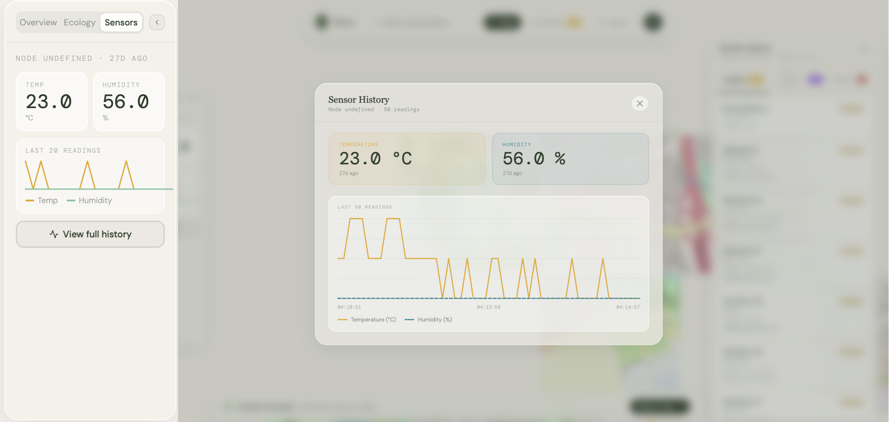
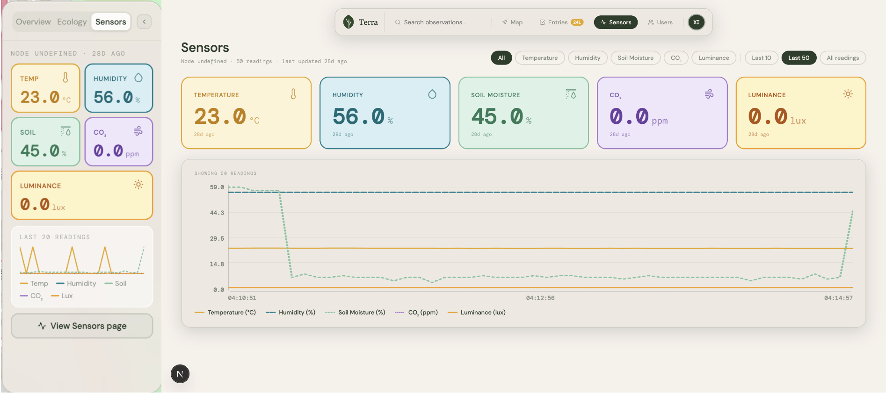
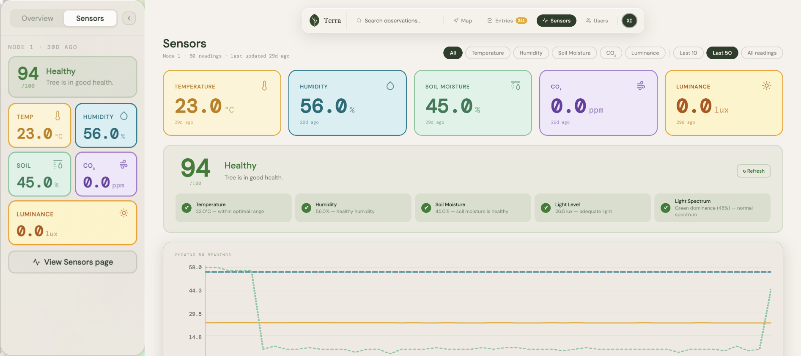

✦ Chania, Greece · May 2026
Deliverables
Orientation and Project Planning
We started off with an introduction to the department, the university facilities, the academic team, and the local working environment. On the first day we shared our project progress with Dr. Iraklis and listed the components we would need to continue, including temperature, light, soil moisture, and CO2 sensors. Since we were waiting for these to be delivered, we couldn't get hands-on with the project just yet.
We did have two lectures this week. One was by Professor Rui, introducing how AI and IoT can work together. It covered the fundamentals of Generative AI and how modern language models actually work, from how they're trained to their limitations like hallucinations and outdated knowledge. It was a bit of a surprise topic given that we'll be diving deeper into AI during our time in Canada, but it turned out to be a nice early introduction to the subject. It was also a kind gesture that they flew the professor in from Portugal especially for this.
With the equipment on its way and some breathing room in the schedule, we also had time to enjoy what Chania had to offer, the beaches, the old town, and the general vibe of the place. A good start to the module.
Deliverables
Why
Our sensors were collecting valuable data but the way it was being displayed wasn't doing it justice. The initial version used a pop up layout with a left side bar that was cluttered, hard to read, and visually inconsistent. Timestamps were too small, colours were blending into each other, and the overall design didn't give field workers a clear or quick understanding of what was happening with their trees. On top of that, the Vienna market feedback made it clear that readability and clarity needed to be a priority.
Version One

How
I went through several iterations to get this right. I focused on making colours more distinct and pairing each sensor with a recognisable icon so users could differentiate readings without relying on colour alone, an important accessibility consideration. I improved the graph readability by making numbers clearly visible and added filters so users could toggle between sensors. I also removed the ecology tab as it only contained mock data and was adding noise rather than value. Towards the end my teammate integrated a tree health score tab, and together we made sure it was properly incorporated into the final design.
Version Two

What
The final sensor dashboard is a clean, readable, and accessible page that displays real time readings from the temperature, light, and soil moisture sensors. Each sensor has its own icon and colour, the graph is easy to read, and the tree health score, calculated by an AI model, gives users an at a glance overview of how their trees are doing. The dashboard is also built with scalability in mind, ready to accommodate additional sensors as the system grows.
Final Version

So
Going from version one to the final version is night and day. What started as a cluttered and hard to read pop up has turned into an intuitive dashboard that field workers can actually use. It is scalable, accessible, and built to grow with the product.
Project Implementation and Mentoring
We kicked off the week with a Scrum lecture from Manolis which was really informative. It also made clear that we hadn't been using Scrum correctly up until this point, and honestly at Fontys we never really got a proper introduction to it either. So this was a valuable reset.
We also received our hardware from Dr. Iraklis this week. My teammates with more backend knowledge took the lead on getting the sensors connected and functional.
While they handled the technical setup, I focused on the dashboard design and how to best display the sensor readings we would be receiving. A big part of this was working through the feedback we had collected at the market presentation in Vienna:
On top of the feedback, I also made a conscious decision to design the dashboard with scalability in mind, so that additional sensors could be added in the future without needing a redesign.
I created a new page in our product called Software, where I displayed each sensor reading with both an icon and a colour. This was an intentional accessibility decision so that people with colour blindness could still differentiate between sensors without relying on colour alone.
We also had two other sessions this week that stood out. Professor Petridis ran two workshops that were both genuinely useful. The first was a presentation skills workshop where we worked on how to communicate and present more effectively. The second was focused on building time management skills, helping us think more intentionally about how we structure and prioritise our work. He was very knowledgeable and there was a lot to take away from both sessions.
We also had a talk by Assistant Professor George Kakavelakis on turning research projects into real world ventures. He shared his own journey through top electrical engineering programmes in Europe and how he experienced a startup firsthand. What made it valuable wasn't the success story but the honesty around it. It was encouraging in the sense that it made the idea of starting your own company feel less scary, while also making clear that you shouldn't be naive about it either.
Deliverables
Finalization and Presentation
This week was short by design. With most of the group flying out on Thursday, we only had three working days to wrap everything up. By this point the project was largely finished, my teammates had the sensors fully working and the dashboard was in its final state.
On Wednesday we had our final IoT presentation where each team presented their technical approach, the components they worked with, and the real world impact of their solution. I contributed to the presentation alongside my team. It was a good moment to reflect on how far the project had come from week one when we were still waiting for our hardware to arrive.
After the presentation we had a group dinner to close out the experience, which was a nice way to end the module together.
Unfortunately the original PowerPoint has since been edited so I can't show the exact version we presented, but the pictures below capture our time in Greece better than any slide could.